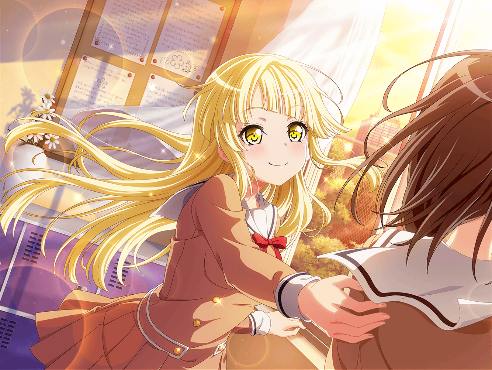

花咲川女子学園 1-C教室
美咲
…………
こころ
美咲！ ここにいたのね！
美咲
こころ……
なんでまた来るの。放っといてって言ったじゃん
こころ
それは聞いたけど、あたしは美咲を放っておきたくないの！
美咲
……だから、こころじゃあたしの気持ちはわかんないって
こころ
ええ、わからないわ。
だから、わかろうとするのはやめたの
美咲
は……？
ていうか、前に後ろ向きなこと言ってる人といるの、
苦手って言ってなかった？
美咲
胸がぎゅってなって変な気持ちになるって。
今のあたし、最高に後ろ向きだよ
美咲
わざわざ関わりに来ることないんじゃないの？
こころ
そんなこと言ったかしら？
美咲
……なんか覚えてたあたしが嫌になる
こころ
覚えてないけど、美咲は別に後ろ向きじゃないと思うわ！
美咲
何を見たらそう言えるかな……
こころ
だって、美咲がもやもやしてるのって、
ハロハピにいる意味がないかもって考えてるからなんでしょ？
こころ
それって、ハロハピにいる意味を見つけたいってことじゃない
美咲
…………！
こころ
それなら後ろ向きじゃなくて、とっても前向きだと思うわ！
美咲
……どっちでもいいよ。
とにかく一人で考えたいんだから放っといて
こころ
それはダメよ。前向きなことなら楽しく考えたほうがいいもの
こころ
一人じゃ楽しくなれないのよ？
美咲
？

こころ
あたし、わかったの。
楽しい気持ちってどんな時にわきでてくるのか
こころ
どうしたら美咲が笑顔になるのかわからなくて、
さっきまであたし、もやもやしてたの
こころ
でもね、花音とお話ししたら
もやもやがいつのまにか消えちゃったのよ
こころ
雲が晴れて青い空が見えた時みたいな
嬉しくて楽しい気持ちになれたの！
美咲
……何が言いたいわけ？
こころ
楽しい気持ちは誰かといると生まれるものってこと！
こころ
よく考えたらそうなのよね。
ハロハピのみんなといろんなことをしてきたけど、
あんなに楽しかったのはみんなと一緒だったからよ
こころ
薫がいて、はぐみがいて、花音がいて、ミッシェルがいて、
美咲がいたから笑顔になれたんだと思うわ！
美咲
あたしがいなくたって、
あんた達は勝手に笑顔になってたでしょ
美咲
みんなが笑顔になるようなことなんて、
あたしは今までしてないし……
こころ
そんなことないわ！ ほら、思い出してみて！
こころ
みんなを笑顔にしてくれるミッシェルを
美咲はいつも連れてきてくれるじゃない！
美咲
それ、笑顔にしてるのはあたしじゃなくてミッシェルじゃん……
こころ
……言われてみれば、そうね！
こころ
でも、他にも美咲がみんなを笑顔にしたお話はあるわよ！
たとえば……ほら！ 迷子のペンギンさんと会った時！
こころ
迷子になった花音を美咲は助けてたわ！
あの時、花音を笑顔にしたのは美咲でしょう？
美咲
あれは花音さんが困ってたから手伝っただけだし。
あたしだけじゃなくて、こころ達だっていたじゃん
こころ
それなら、ホワイトデーの時はどう？
薫の舞台が笑顔でいっぱいになるように手伝っていたじゃない！
こころ
あの時の薫はとっても嬉しそうだったわ！
美咲が薫を笑顔にしたのよ！
美咲
いや、なんか巻き込まれて手伝っただけで……
ていうか、他にも手伝った子いるし、
あたしが笑顔にしたわけじゃないでしょ
こころ
じゃあ、ふわキャラ選手権の時のことは？
はぐみ、美咲の言葉にとっても感謝してたわ！
こころ
正々堂々真剣勝負が大事って！ とっても素敵な言葉ね！
あの時、はぐみを笑顔にしたのは美咲でしょう？
美咲
細かいことよく覚えてるな……
でもまあ、確かにそれはあたしが言ったけど……
こころ
他にもあるわよ！
美咲がライブをしたいって言った時のこと覚えてる？
美咲
あー、クラスの子をライブに呼んだ時の……
こころ
あの時、ミッシェルから聞いたの。
ハロハピを前より好きになったって、美咲が言ってたって
こころ
あたしね、その言葉を聞いて
とーーーーっても笑顔になれたのよ！！
美咲
！ あ、あれは……
ていうか、どれも大したことしてないじゃん。
別に誰かを笑顔にしたくてしたわけじゃ……
こころ
どうして美咲が大したことじゃないって決めるの？
こころ
美咲からもらった笑顔の大きさはもらったあたし達が決めるわ！
美咲
…………！
こころ
どのくらい大きいかっていうと……
こーーーーーーーーのくらい大きいのよ！
こころ
……もうちょっと大きかった気もするわね。
ちょっと待ってて、校庭にどのくらい大きいか描いてくるわ
美咲
いやいや、この流れで一旦校庭行く？？
こころ
あら、ダメなの？
美咲
ホントあんたって……
ぷっ……あはは……！
こころ
美咲が笑ったわ！
美咲
あんたがわけわかんないこと言うからでしょ
はあ、なんか気が抜けちゃったよ……
美咲
（でもそっか……
あたしもみんなを笑顔にできてたんだ……）
美咲
（あたしがハロハピにいる意味って、曲を作ったり、
みんなのフォローをすることだけじゃないのかも……）
こころ
美咲が笑顔になって嬉しいわ！ 元気がわいてきたかしら！
美咲
まあ、ちょっとはね
美咲
その、ありがと、こころ……
こころ
お礼なんていいわ！
あたしは自分がしたいことをしただけだもの！
こころ
よーし！ 元気が出てきたところで、
美咲の悩みについて考えましょう！
こころ
元気があれば、悩みなんてばびゅーんと解決できるはずだわ！
美咲
え……？
いや、今ので結構解決したんだけど……